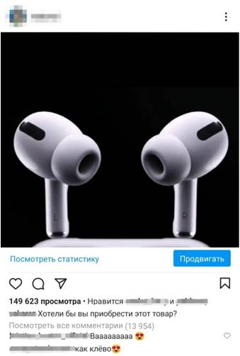

Создатели рекламных роликов бесконечно клепают однотипные скучные видео, а после жалуются, что пользователи на них не ведутся.
В этой статья я расскажу, как создать рекламный ролик, который привлечет клиента к просмотру видео до самого конца.
Реклама – самый быстрый способ к продвижению. На нашем сайте подробно рассказано, как создать рекламный ролик, что нужно учитывать, чтобы зрители обратили и закрепили внимание к рекламе. Всего несколько простых этапов и рекламное сообщение будет готово.
Роль рекламы довольно принципиальна. Реклама действенный метод влияния на рынке и борьбы за покупателя, именно поэтому реклама заняла важное место в рыночной экономике. Вследствие этого в условиях жёсткой конкуренции роль рекламы на предприятиях довольно высока.
Определение производительности маркетинговых кампаний, как актуального контролирующего вещества маркетинговой работы, считается главной задачей.
Реклама – информация, распространяющая любыми способами, в любой форме и с использованием любых средств, адресованная неопределенному кругу лиц и направленная для привлечения внимания к объекту рекламирования, формирования или поддержание интереса к нему и его продвижения на рынке.
Также реклама – это социально-психологическое явление. Она затрагивает некоторые участки психики современного человека. Люди всегда влияют друг на друга. Психологически сильный, влияет на волю более слабого. Особенно это проявляется в политике и рекламе. Стоит всегда держать эти определения у себя в голове. Каждый раз, когда ты создаешь рекламный ролик, нужно понимать, какая цель у этого ролика.
Первый этап.
Для создания рекламы, нужно сначала определить, какими средствами вы будете публиковать его.
Существует две группы рекламы - это медийная и немедийная. Чаще всего используется медийная реклама (телевизионные рекламы, радиорекламы, интернет рекламы и др.). Немедийные рекламы (печатная реклама и рекламное мероприятие) тоже можно встретить и довольно часто, но она сейчас не столь популярна.
Также стоит учитывать, кому предназначена ваша реклама. Она может быть направлена на индивидуального потребителя, а может быть направлена на организации и сферу бизнеса.
Помимо этого, чтобы создать рекламу, которое будет соответствовать интересам и желанием аудитории - необходимо собрать о ней сведения:
В первую очередь стоит задуматься о географическом и социальном положение. Всегда учитывайте, для кого предназначен ваш рекламный ролик. Для детей или взрослых, для женщин или мужчин и т.д. Все эти параметры имеют значение. Затем задумайтесь о семейном положение аудитории. Думаю, будет бесполезно предлагать детские вещи, если человек не имеет детей, скажем, он просто не заинтересован в этом.
Во вторую очередь задумайтесь о психических параметрах. Узнав всего лишь характер, образ жизни и т.п., можно сделать многие выводы и предложить для каждого свое, что будет им интересно.
Второй этап.
Чтобы реклама была эффективна, нужно чтобы она как-то взаимодействовала с аудиторией. Поэтому стоит выяснить, как это делать.
НУЖНО ПОМНИТЬ, что на человека действуют множество раздражителей, например цвет, формы и т.д. Чем сильнее раздражитель, тем сильнее усиливается рекламное действие. Поэтому, чтобы привлечь внимания людей, используйте яркость и броскость в своей рекламе.
Содержание рекламного обращения – основная проблема рекламы, так как в процессе своего воздействия оно оказывает влияние на поведение и мнение человека, принимается, или отвергается им. Поэтому многие используют способы внушения и убеждения. Способ внушения заключается в том, чтобы люди принимали информацию, основанную на авторитете источника информации, а не на доказательствах ее объективности, а способ убеждения рассчитан на мышление человека, чтобы изменить его взгляды.
Сила рекламного воздействия зависит от – повторяемости информации. Мало сказать один раз, для получения эффекта необходимо это повторять. Если ты посмотришь одну и ту же рекламу несколько раз, то она останется у тебя в голове, а может даже и поменяет твои взгляды к нему. Помимо этого нужна понимать, что малое количество информации запоминается на много легче, поэтому рекламу нужно передавать в легкой форме.
Третий этап.
Привлечение человека к рекламе зависит от разных факторов, но помимо них, в рекламной деятельности используют приемы привлечения к рекламе.
1. Прием новизны (для усиления внимания к рекламируемому объекту о нем должно сообщаться, что-то новое, дополняться новыми сведениями.).
2. Прием использования потребностей и интересов людей (самый простой способ привлечь внимание аудитории к рекламе. Если соответствовать интересам, потребностям и желаниям аудитории, то они будут привязаны к рекламе).
3. Прием проблемной ситуации (Перед аудиторией становится проблема – как быть? Такая постановка вопроса побуждает людей к размышлению, тем самым зацикливив их на этом).
4. Прием юмора (этот прием редко используется, но при правильном использовании дает большой результат, так как хорошо запоминается).
Это все основные критерии создания рекламы, которые стоит учитывать. Чтобы подтвердить это, я решил создать собственную рекламу, чтобы посмотреть, как сильно возрастет аудитория, после публикации рекламы.
Для того, чтобы ваш рекламный ролик увидели, вы должны его опубликовать (метод публикации зависит от средств публикации (см. «ПЕРВЫЙ ЭТАП»)). В качестве публикации можно использовать любой популярный хоcтин: Яндекс.Маркет, Google Business, Instagram и др.
